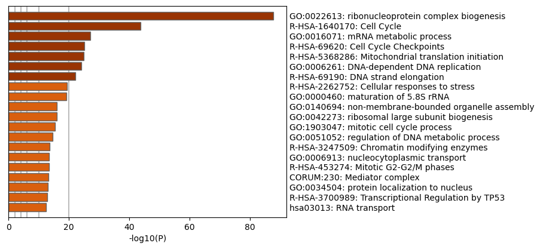
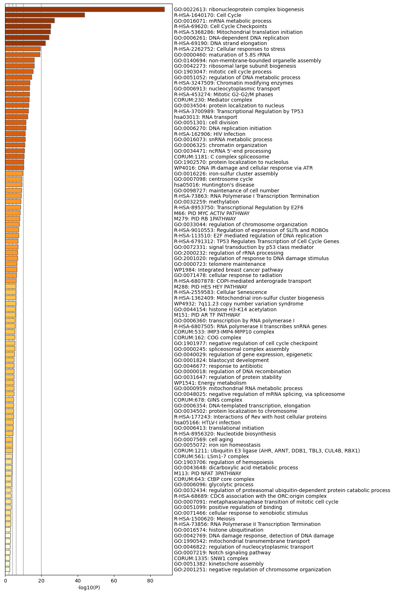
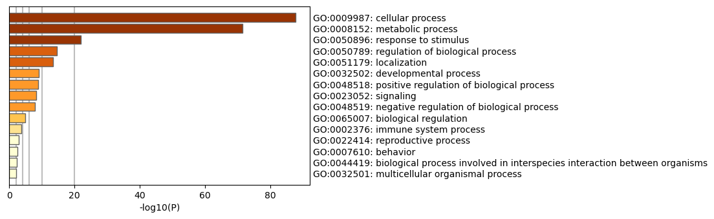
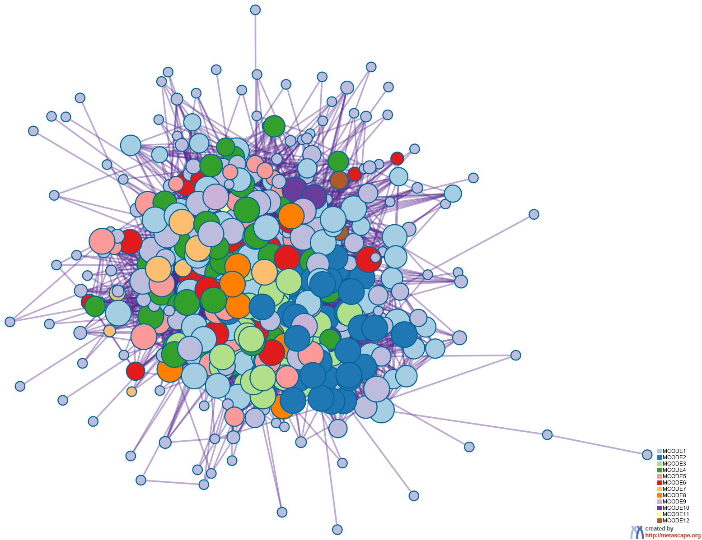
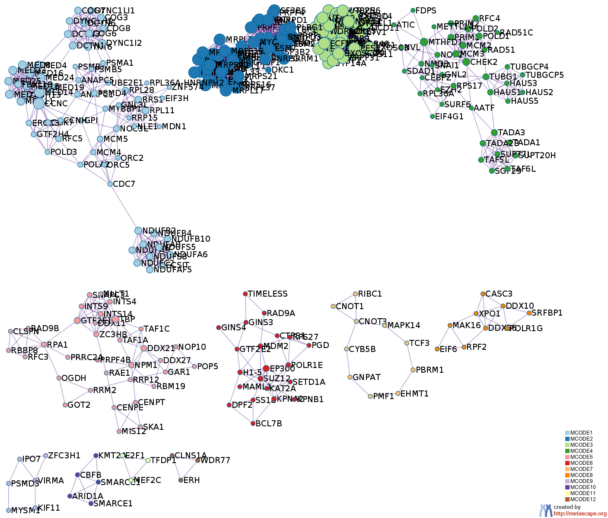
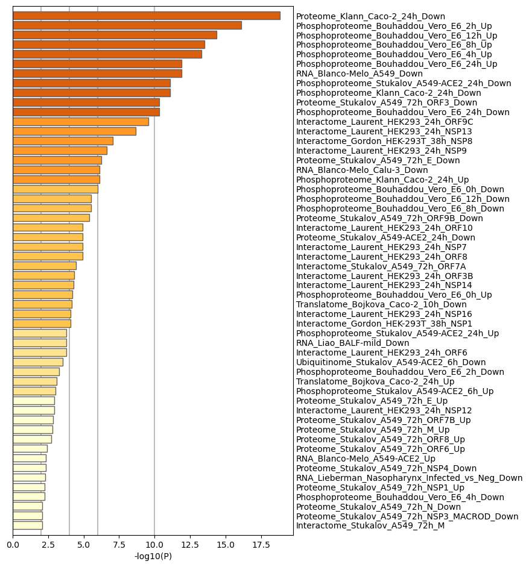
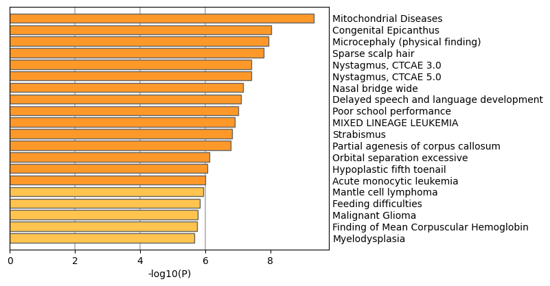
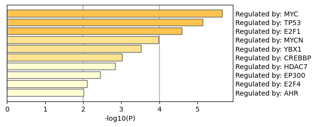
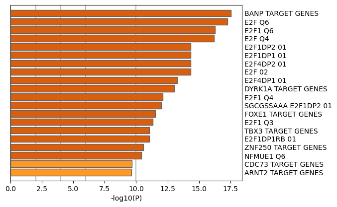

Metascape Gene List Analysis Report
metascape.org1
Bar Graph Summary
Figure 1. Bar graph of enriched terms across input gene lists, colored by p-values.
|

|

|
Metascape only visualizes the top 20 clusters. Up to 100 enriched clusters can be viewed here.

|
The top-level Gene Ontology biological processes can be viewed here.

|
Gene Lists
User-provided gene identifiers are first converted into their corresponding H. sapiens Entrez gene IDs using the latest version of the database (last updated on 2021-11-01). If multiple identifiers correspond to the same Entrez gene ID, they will be considered as a single Entrez gene ID in downstream analyses. The gene lists are summarized in Table 1.
Table 1. Statistics of input gene lists.
| Name |
Total |
Unique |
| MyList |
500 |
500 |
Gene Annotation
The following are the list of annotations retrieved from the latest version of the database (last updated on 2021-11-01) (Table 2).
Table 2. Gene annotations extracted
| Name |
Type |
Description |
| Gene Symbol |
Description |
Primary HUGO gene symbol. |
| Description |
Description |
Short description. |
| Biological Process (GO) |
Function/Location |
Descriptions summarized based on gene ontology database, where up to three most informative GO terms are kept. |
| Kinase Class (UniProt) |
Function/Location |
Detailed kinase classes. |
| Protein Function (Protein Atlas) |
Function/Location |
Protein Function (Protein Atlas) |
| Subcellular Location (Protein Atlas) |
Function/Location |
Sucellular Location (Protein Atlas) |
| Drug (DrugBank) |
Genotype/Phenotype/Disease |
Drug information for the given gene as target. |
| Canonical Pathways
|
Ontology |
Canonical Pathways
|
| Hallmark Gene Sets
|
Ontology |
Hallmark Gene Sets
|
Pathway and Process Enrichment Analysis
For each given gene list, pathway and process enrichment analysis has been carried out with the following ontology sources: KEGG Pathway, GO Biological Processes, Reactome Gene Sets, Canonical Pathways, CORUM, TRRUST, DisGeNET, PaGenBase, Transcription Factor Targets, WikiPathways, PANTHER Pathway and COVID. All genes in the genome have been used as the enrichment background. Terms with a p-value < 0.01, a minimum count of 3, and an enrichment factor > 1.5 (the enrichment factor is the ratio between the observed counts and the counts expected by chance) are collected and grouped into clusters based on their membership similarities. More specifically, p-values are calculated based on the accumulative hypergeometric distribution
2, and q-values are calculated using the Banjamini-Hochberg procedure to account for multiple testings
3. Kappa scores
4 are used as the similarity metric when performing hierachical clustering on the enriched terms, and sub-trees with a similarity of > 0.3 are considered a cluster. The most statistically significant term within a cluster is chosen to represent the cluster.
Table 3. Top 20 clusters with their representative enriched terms (one per cluster). "Count" is the number of genes in the user-provided lists with membership in the given ontology term. "%" is the percentage of all of the user-provided genes that are found in the given ontology term (only input genes with at least one ontology term annotation are included in the calculation). "Log10(P)" is the p-value in log base 10. "Log10(q)" is the multi-test adjusted p-value in log base 10.
| GO |
Category |
Description |
Count |
% |
Log10(P) |
Log10(q) |
| GO:0022613 |
GO Biological Processes |
ribonucleoprotein complex biogenesis |
105 |
21.00 |
-87.85 |
-83.49 |
| R-HSA-1640170 |
Reactome Gene Sets |
Cell Cycle |
81 |
16.20 |
-43.83 |
-40.51 |
| GO:0016071 |
GO Biological Processes |
mRNA metabolic process |
63 |
12.60 |
-27.09 |
-23.99 |
| R-HSA-69620 |
Reactome Gene Sets |
Cell Cycle Checkpoints |
41 |
8.20 |
-25.07 |
-22.03 |
| R-HSA-5368286 |
Reactome Gene Sets |
Mitochondrial translation initiation |
26 |
5.20 |
-25.00 |
-22.02 |
| GO:0006261 |
GO Biological Processes |
DNA-dependent DNA replication |
31 |
6.20 |
-24.14 |
-21.19 |
| R-HSA-69190 |
Reactome Gene Sets |
DNA strand elongation |
17 |
3.40 |
-22.07 |
-19.20 |
| R-HSA-2262752 |
Reactome Gene Sets |
Cellular responses to stress |
55 |
11.00 |
-19.42 |
-16.63 |
| GO:0000460 |
GO Biological Processes |
maturation of 5.8S rRNA |
16 |
3.20 |
-19.13 |
-16.37 |
| GO:0140694 |
GO Biological Processes |
non-membrane-bounded organelle assembly |
36 |
7.20 |
-16.07 |
-13.45 |
| GO:0042273 |
GO Biological Processes |
ribosomal large subunit biogenesis |
18 |
3.60 |
-15.94 |
-13.34 |
| GO:1903047 |
GO Biological Processes |
mitotic cell cycle process |
48 |
9.60 |
-15.36 |
-12.79 |
| GO:0051052 |
GO Biological Processes |
regulation of DNA metabolic process |
33 |
6.60 |
-14.61 |
-12.08 |
| R-HSA-3247509 |
Reactome Gene Sets |
Chromatin modifying enzymes |
28 |
5.60 |
-13.69 |
-11.21 |
| GO:0006913 |
GO Biological Processes |
nucleocytoplasmic transport |
29 |
5.80 |
-13.49 |
-11.02 |
| R-HSA-453274 |
Reactome Gene Sets |
Mitotic G2-G2/M phases |
24 |
4.80 |
-13.45 |
-10.99 |
| CORUM:230 |
CORUM |
Mediator complex |
12 |
2.40 |
-13.21 |
-10.77 |
| GO:0034504 |
GO Biological Processes |
protein localization to nucleus |
28 |
5.60 |
-13.07 |
-10.63 |
| R-HSA-3700989 |
Reactome Gene Sets |
Transcriptional Regulation by TP53 |
31 |
6.20 |
-12.89 |
-10.47 |
| hsa03013 |
KEGG Pathway |
RNA transport |
22 |
4.40 |
-12.46 |
-10.08 |
To further capture the relationships between the terms, a subset of enriched terms have been selected and rendered as a network plot, where terms with a similarity > 0.3 are connected by edges. We select the terms with the best p-values from each of the 20 clusters, with the constraint that there are no more than 15 terms per cluster and no more than 250 terms in total. The network is visualized using
Cytoscape5, where each node represents an enriched term and is colored first by its cluster ID (Figure 2.a) and then by its p-value (Figure 2.b). These networks can be interactively viewed in Cytoscape through the .cys files (contained in the Zip package, which also contains a publication-quality version as a PDF) or within a browser by clicking on the web icon. For clarity, term labels are only shown for one term per cluster, so it is recommended to use Cytoscape or a browser to visualize the network in order to inspect all node labels. We can also export the network into a PDF file within Cytoscape, and then edit the labels using Adobe Illustrator for publication purposes. To switch off all labels, delete the "Label" mapping under the "Style" tab within Cytoscape, and then export the network view.
Figure 2. Network of enriched terms: (a) colored by cluster ID, where nodes that share the same cluster ID are typically close to each other; (b) colored by p-value, where terms containing more genes tend to have a more significant p-value.
Protein-protein Interaction Enrichment Analysis
For each given gene list, protein-protein interaction enrichment analysis has been carried out with the following databases: STRING
6, BioGrid
7, OmniPath
8, InWeb_IM
9.Only physical interactions in STRING (physical score > 0.132) and BioGrid are used (
details). The resultant network contains the subset of proteins that form physical interactions with at least one other member in the list. If the network contains between 3 and 500 proteins, the Molecular Complex Detection (MCODE) algorithm
10 has been applied to identify densely connected network components. The MCODE networks identified for individual gene lists have been gathered and are shown in Figure 3.
Pathway and process enrichment analysis has been applied to each MCODE component independently, and the three best-scoring terms by p-value have been retained as the functional description of the corresponding components, shown in the tables underneath corresponding network plots within Figure 3.
Figure 3. Protein-protein interaction network and MCODE components identified in the gene lists.
 | |  |


| |
|
| GO |
Description |
Log10(P) |
| GO:0022613 |
ribonucleoprotein complex biogenesis |
-88.1 |
| GO:0042254 |
ribosome biogenesis |
-82.5 |
| R-HSA-8953854 |
Metabolism of RNA |
-77.6 |
| |
| Color |
MCODE |
GO |
Description |
Log10(P) |
|
MCODE_1 |
CORUM:230 |
Mediator complex |
-23.9 |
|
MCODE_1 |
R-HSA-69242 |
S Phase |
-21.6 |
|
MCODE_1 |
R-HSA-69278 |
Cell Cycle, Mitotic |
-21.0 |
|
MCODE_2 |
R-HSA-5419276 |
Mitochondrial translation termination |
-48.7 |
|
MCODE_2 |
R-HSA-5389840 |
Mitochondrial translation elongation |
-48.7 |
|
MCODE_2 |
R-HSA-5368286 |
Mitochondrial translation initiation |
-48.7 |
|
MCODE_3 |
R-HSA-8868773 |
rRNA processing in the nucleus and cytosol |
-91.2 |
|
MCODE_3 |
R-HSA-72312 |
rRNA processing |
-90.2 |
|
MCODE_3 |
R-HSA-6791226 |
Major pathway of rRNA processing in the nucleolus and cytosol |
-89.1 |
|
MCODE_4 |
CORUM:6664 |
STAGA complex, SPT3-linked |
-18.3 |
|
MCODE_4 |
R-HSA-1640170 |
Cell Cycle |
-16.8 |
|
MCODE_4 |
CORUM:6643 |
SAGA complex, GCN5-linked |
-15.5 |
|
MCODE_5 |
R-HSA-1640170 |
Cell Cycle |
-14.1 |
|
MCODE_5 |
R-HSA-6807505 |
RNA polymerase II transcribes snRNA genes |
-11.7 |
|
MCODE_5 |
R-HSA-69620 |
Cell Cycle Checkpoints |
-10.5 |
|
MCODE_6 |
R-HSA-8941856 |
RUNX3 regulates NOTCH signaling |
-7.0 |
|
MCODE_6 |
R-HSA-210744 |
Regulation of gene expression in late stage (branching morphogenesis) pancreatic bud precursor cells |
-6.8 |
|
MCODE_6 |
GO:0018205 |
peptidyl-lysine modification |
-6.8 |
|
MCODE_7 |
R-HSA-3700989 |
Transcriptional Regulation by TP53 |
-5.4 |
|
MCODE_7 |
GO:0043488 |
regulation of mRNA stability |
-4.8 |
|
MCODE_7 |
GO:0061013 |
regulation of mRNA catabolic process |
-4.7 |
|
MCODE_8 |
GO:0042254 |
ribosome biogenesis |
-12.5 |
|
MCODE_8 |
GO:0022613 |
ribonucleoprotein complex biogenesis |
-11.2 |
|
MCODE_8 |
GO:0006364 |
rRNA processing |
-10.9 |
|
MCODE_10 |
R-HSA-8939243 |
RUNX1 interacts with co-factors whose precise effect on RUNX1 targets is not known |
-11.0 |
|
MCODE_10 |
R-HSA-8878171 |
Transcriptional regulation by RUNX1 |
-10.5 |
|
MCODE_10 |
CORUM:564 |
BAF complex |
-9.9 |
|
MCODE_11 |
M279 |
PID RB 1PATHWAY |
-8.0 |
|
MCODE_11 |
R-HSA-2262752 |
Cellular responses to stress |
-4.8 |
|
MCODE_11 |
R-HSA-8953897 |
Cellular responses to stimuli |
-4.8 |
|
Quality Control and Association Analysis
Gene list enrichments are identified in the following ontology categories: COVID, DisGeNET, TRRUST, Transcription_Factor_Targets. All genes in the genome have been used as the enrichment background. Terms with a p-value < 0.01, a minimum count of 3, and an enrichment factor > 1.5 (the enrichment factor is the ratio between the observed counts and the counts expected by chance) are collected and grouped into clusters based on their membership similarities. The top few enriched clusters (one term per cluster) are shown in the Figure 4-7. The algorithm used here is the same as that is used for pathway and process enrichment analysis.
Figure 4. Summary of enrichment analysis in COVID11.
|

|
|
|
| GO |
Description |
Count |
% |
Log10(P) |
Log10(q) |
| COVID236 |
Proteome_Klann_Caco-2_24h_Down |
35 |
7.00 |
-19.00 |
-14.00 |
| COVID062 |
Phosphoproteome_Bouhaddou_Vero_E6_2h_Up |
32 |
6.40 |
-16.00 |
-12.00 |
| COVID058 |
Phosphoproteome_Bouhaddou_Vero_E6_12h_Up |
30 |
6.00 |
-14.00 |
-11.00 |
| COVID066 |
Phosphoproteome_Bouhaddou_Vero_E6_8h_Up |
29 |
5.80 |
-14.00 |
-10.00 |
| COVID064 |
Phosphoproteome_Bouhaddou_Vero_E6_4h_Up |
27 |
5.40 |
-13.00 |
-9.90 |
| COVID007 |
RNA_Blanco-Melo_A549_Down |
27 |
5.40 |
-12.00 |
-8.70 |
| COVID060 |
Phosphoproteome_Bouhaddou_Vero_E6_24h_Up |
27 |
5.40 |
-12.00 |
-8.70 |
| COVID130 |
Phosphoproteome_Stukalov_A549-ACE2_24h_Down |
26 |
5.20 |
-11.00 |
-8.00 |
| COVID234 |
Phosphoproteome_Klann_Caco-2_24h_Down |
26 |
5.20 |
-11.00 |
-8.00 |
| COVID059 |
Phosphoproteome_Bouhaddou_Vero_E6_24h_Down |
25 |
5.00 |
-10.00 |
-7.30 |
| COVID172 |
Proteome_Stukalov_A549_72h_ORF3_Down |
25 |
5.00 |
-10.00 |
-7.30 |
| COVID389 |
Interactome_Laurent_HEK293_24h_ORF9C |
24 |
4.80 |
-9.60 |
-6.60 |
| COVID369 |
Interactome_Laurent_HEK293_24h_NSP13 |
11 |
2.20 |
-8.70 |
-5.80 |
| COVID097 |
Interactome_Gordon_HEK-293T_38h_NSP8 |
7 |
1.40 |
-7.10 |
-4.30 |
| COVID380 |
Interactome_Laurent_HEK293_24h_NSP9 |
10 |
2.00 |
-6.60 |
-4.00 |
| COVID138 |
Proteome_Stukalov_A549_72h_E_Down |
17 |
3.40 |
-6.30 |
-3.60 |
| COVID015 |
RNA_Blanco-Melo_Calu-3_Down |
19 |
3.80 |
-6.10 |
-3.50 |
| COVID235 |
Phosphoproteome_Klann_Caco-2_24h_Up |
19 |
3.80 |
-6.10 |
-3.50 |
| COVID055 |
Phosphoproteome_Bouhaddou_Vero_E6_0h_Down |
18 |
3.60 |
-6.00 |
-3.40 |
| COVID057 |
Phosphoproteome_Bouhaddou_Vero_E6_12h_Down |
18 |
3.60 |
-5.50 |
-3.00 |
|
Figure 5. Summary of enrichment analysis in DisGeNET12.
|

|
|
|
| GO |
Description |
Count |
% |
Log10(P) |
Log10(q) |
| C0751651 |
Mitochondrial Diseases |
23 |
4.60 |
-9.30 |
-6.40 |
| C0678230 |
Congenital Epicanthus |
26 |
5.20 |
-8.00 |
-5.20 |
| C4551563 |
Microcephaly (physical finding) |
16 |
3.20 |
-7.90 |
-5.10 |
| C1857042 |
Sparse scalp hair |
12 |
2.40 |
-7.80 |
-5.00 |
| C1963184 |
Nystagmus, CTCAE 3.0 |
36 |
7.20 |
-7.40 |
-4.70 |
| C4554036 |
Nystagmus, CTCAE 5.0 |
36 |
7.20 |
-7.40 |
-4.70 |
| C1849367 |
Nasal bridge wide |
25 |
5.00 |
-7.20 |
-4.40 |
| C0454644 |
Delayed speech and language development |
29 |
5.80 |
-7.10 |
-4.40 |
| C1843367 |
Poor school performance |
17 |
3.40 |
-7.00 |
-4.30 |
| C3888194 |
MIXED LINEAGE LEUKEMIA |
18 |
3.60 |
-6.90 |
-4.20 |
| C0038379 |
Strabismus |
33 |
6.60 |
-6.80 |
-4.10 |
| C0431368 |
Partial agenesis of corpus callosum |
8 |
1.60 |
-6.80 |
-4.10 |
| C0020534 |
Orbital separation excessive |
28 |
5.60 |
-6.10 |
-3.50 |
| C4023116 |
Hypoplastic fifth toenail |
5 |
1.00 |
-6.10 |
-3.50 |
| C0023465 |
Acute monocytic leukemia |
29 |
5.80 |
-6.00 |
-3.40 |
| C4721414 |
Mantle cell lymphoma |
24 |
4.80 |
-5.90 |
-3.40 |
| C0232466 |
Feeding difficulties |
24 |
4.80 |
-5.80 |
-3.30 |
| C0555198 |
Malignant Glioma |
31 |
6.20 |
-5.80 |
-3.20 |
| C1261502 |
Finding of Mean Corpuscular Hemoglobin |
29 |
5.80 |
-5.70 |
-3.20 |
| C0026985 |
Myelodysplasia |
14 |
2.80 |
-5.70 |
-3.20 |
|
Figure 6. Summary of enrichment analysis in TRRUST.
|

|
|
|
| GO |
Description |
Count |
% |
Log10(P) |
Log10(q) |
| TRR00780 |
Regulated by: MYC |
11 |
2.20 |
-5.70 |
-3.20 |
| TRR01419 |
Regulated by: TP53 |
13 |
2.60 |
-5.10 |
-2.70 |
| TRR00230 |
Regulated by: E2F1 |
11 |
2.20 |
-4.60 |
-2.30 |
| TRR00781 |
Regulated by: MYCN |
6 |
1.20 |
-4.00 |
-1.80 |
| TRR01546 |
Regulated by: YBX1 |
5 |
1.00 |
-3.50 |
-1.50 |
| TRR00130 |
Regulated by: CREBBP |
4 |
0.80 |
-3.00 |
-1.10 |
| TRR00473 |
Regulated by: HDAC7 |
3 |
0.60 |
-2.80 |
-1.00 |
| TRR00270 |
Regulated by: EP300 |
5 |
1.00 |
-2.40 |
-0.69 |
| TRR00233 |
Regulated by: E2F4 |
3 |
0.60 |
-2.10 |
-0.45 |
| TRR00004 |
Regulated by: AHR |
3 |
0.60 |
-2.00 |
-0.38 |
|
Figure 7. Summary of enrichment analysis in Transcription_Factor_Targets13.
|

|
|
|
| GO |
Description |
Count |
% |
Log10(P) |
Log10(q) |
| M29900 |
BANP TARGET GENES |
52 |
10.00 |
-18.00 |
-13.00 |
| M19064 |
E2F Q6 |
30 |
6.00 |
-17.00 |
-13.00 |
| M9279 |
E2F1 Q6 |
29 |
5.80 |
-16.00 |
-12.00 |
| M10115 |
E2F Q4 |
29 |
5.80 |
-16.00 |
-12.00 |
| M12402 |
E2F1DP1 01 |
27 |
5.40 |
-14.00 |
-11.00 |
| M12555 |
E2F1DP2 01 |
27 |
5.40 |
-14.00 |
-11.00 |
| M17867 |
E2F 02 |
27 |
5.40 |
-14.00 |
-11.00 |
| M19298 |
E2F4DP2 01 |
27 |
5.40 |
-14.00 |
-11.00 |
| M10526 |
E2F4DP1 01 |
26 |
5.20 |
-13.00 |
-9.90 |
| M29950 |
DYRK1A TARGET GENES |
46 |
9.20 |
-13.00 |
-9.70 |
| M5000 |
E2F1 Q4 |
25 |
5.00 |
-12.00 |
-8.80 |
| M1905 |
SGCGSSAAA E2F1DP2 01 |
21 |
4.20 |
-12.00 |
-8.70 |
| M29968 |
FOXE1 TARGET GENES |
42 |
8.40 |
-12.00 |
-8.30 |
| M1485 |
E2F1 Q3 |
24 |
4.80 |
-11.00 |
-8.20 |
| M40690 |
TBX3 TARGET GENES |
28 |
5.60 |
-11.00 |
-7.90 |
| M5768 |
E2F1DP1RB 01 |
23 |
4.60 |
-11.00 |
-7.90 |
| M40714 |
ZNF250 TARGET GENES |
33 |
6.60 |
-11.00 |
-7.50 |
| M3265 |
NFMUE1 Q6 |
23 |
4.60 |
-10.00 |
-7.30 |
| M40778 |
CDC73 TARGET GENES |
32 |
6.40 |
-9.70 |
-6.60 |
| M29890 |
ARNT2 TARGET GENES |
37 |
7.40 |
-9.60 |
-6.60 |
|
Reference
- Zhou et al., Metascape provides a biologist-oriented resource for the analysis of systems-level datasets. Nature Communications (2019) 10(1):1523.
- Zar, J.H. Biostatistical Analysis 1999 4th edn., NJ Prentice Hall, pp. 523
- Hochberg Y., Benjamini Y. More powerful procedures for multiple significance testing. Statistics in Medicine (1990) 9:811-818.
- Cohen, J. A coefficient of agreement for nominal scales. Educ. Psychol. Meas. (1960) 20:27-46.
- Shannon P. et al., Cytoscape: a software environment for integrated models of biomolecular interaction networks. Genome Res (2003) 11:2498-2504.
- Szklarczyk D. et al. STRING v11: protein-protein association networks with increased coverage, supporting functional discovery in genome-wide experimental datasets. Nucleic Acids Res. (2019) 47:D607-613.
- Stark C. et al. BioGRID: a general repository for interaction datasets. Nucleic Acids Res. (2006) 34:D535-539.
- Turei D. et al. A scored human protein-protein interaction network to catalyze genomic interpretation. Nat. Methods. (2016) 13:966-967.
- Li T. et al. A scored human protein-protein interaction network to catalyze genomic interpretation. Nat. Methods. (2017) 14:61-64.
- Bader, G.D. et al. An automated method for finding molecular complexes in large protein interaction networks. BMC bioinformatics (2003) 4:2.
- https://metascape.org/COVID.
- Pinero J, et al. DisGeNET: a comprehensive platform integrating information on human disease-associated genes and variants. Nucleic acids research 45, D833-D839 (2017).
- Subramanian A, et al. Gene set enrichment analysis: A knowledge-based approach for interpreting genome-wide expression profiles. Proc Natl Acad Sci U S A 102, 15545-15550 (2005).
{kind=link}
{kind=link}